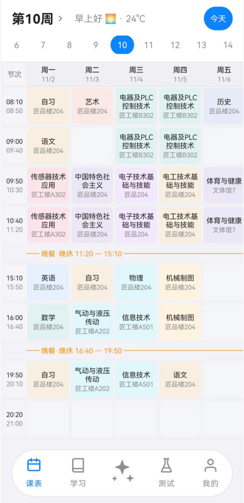
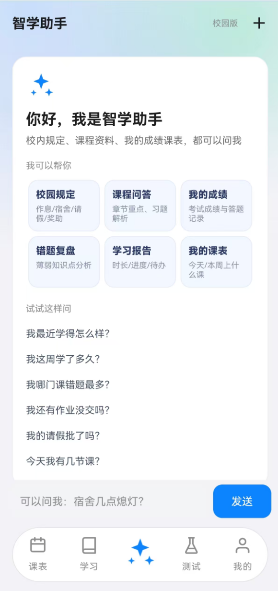
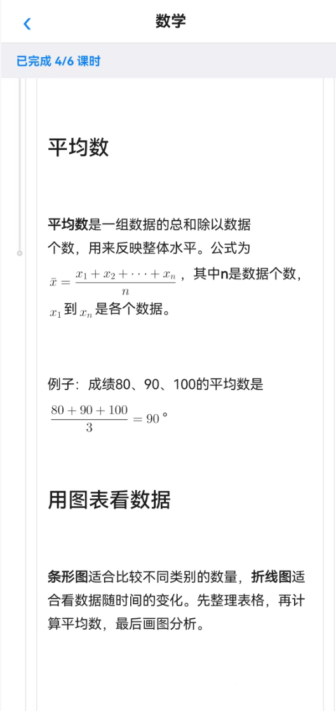

AI 智能出题
四种题型随机组卷，难度自适应升降。
Android 原生应用，覆盖课前学习、课中练习、课后测评的完整闭环。
四种题型随机组卷，难度自适应升降。
专注指标全程量化，找到最佳学习状态。
六维雷达报告，一测即知强弱项。
错题自动归档，AI 剖析错因与建议。
阶段化计划自动生成，直推薄弱章节。
DeepSeek 对话答疑，追问秒回。



RAG 检索增强 + 大模型生成 + AI 语义判分，从章节内容到个性化试卷只需一次点击。
基础记忆 → 理解应用 → 综合分析，依据正确率、跳过率与用时连续两轮同向才调档，稳定不折腾。
Embedding 服务按已学章节向量检索教材内容，题目严格限定在所学范围内，绝不超纲。
解析题、填空题按要点覆盖与理解程度判定对错，措辞不同、语义正确照样得分，拒绝死板比对。
同课同档位指纹缓存 15 分钟，百人并发刷题只调一次大模型，成本与延迟双降。
React 现代化管理后台，为教师与教学管理者提供从课程到个人的全维度数据视图。
查看全局学习数据和统计
| 学生 | 学号 | 班级 | 今日时长 | 状态 |
|---|---|---|---|---|
| 李李** | 2024****01 | 计网2401班 | 32 分钟 | 在线 |
| 王王** | 2024****02 | 软工2402班 | 26 分钟 | 在线 |
| 陈陈** | 2024****05 | 大数据2401班 | 18 分钟 | 离线 |
| 黄黄** | 2024****12 | 人工智能2401班 | 24 分钟 | 在线 |
学生名单与学习状态
| 学生 | 学号 | 班级 | 答题正确率 | 状态 |
|---|---|---|---|---|
| 李李** | 2024****01 | 计网2401班 | 92.4% | 在线 |
| 王王** | 2024****02 | 软工2402班 | 88.1% | 在线 |
| 陈陈** | 2024****05 | 大数据2401班 | 85.7% | 离线 |
| 黄黄** | 2024****12 | 人工智能2401班 | 79.3% | 离线 |
| 吴吴** | 2024****08 | 电子2401班 | 90.2% | 在线 |
| 张张** | 2024****11 | 计网2402班 | 83.6% | 在线 |
课程、课时与上下架管理
班级六维能力与个人学情
学生端为 Android App 与微信小程序（uni-app 跨端编译），教师与管理者使用 React Web 管理端；三端共用统一的 REST API 与 WebSocket 通道，数据实时互通。
课表、章节学习、AI 智能刷题、错题本、六维能力测评、考试作业、课程聊天与专注度统计，覆盖「学 · 练 · 测 · 评」完整学习闭环。
数据总览、学生与班级、课程与章节、一键排课与调课、考试作业发布、成绩与六维学情统计，以及学生名单的批量导入。
一键排课是从零生成：录入班级、课程、教师与每周课时后，由算法自动分配时间、节次和教室；课表导入则是识别已有的 Excel 课表文件并抄录进系统。
算法默认只排周一至周五。如需周日上课（例如节日补课），可在管理端调课窗口中手动选择周日单元格排入，课表支持周一至周日共 7 天显示。
普通消息会正常发送并落库，只有内容包含 @AI 或 @ai 时才会触发 AI 问答。这样设计是为了避免无意义的模型调用、节省 AI 额度并保持聊天流畅。
系统基于 RAG 对已学章节做向量检索，把教材原文注入出题 Prompt 并明确要求不超纲；同一课程、难度与章节的题目指纹缓存 15 分钟，保证同批学生题目一致、便于公平对比。
主观题由大模型按「要点覆盖度 + 语义一致性」双维度评分：核心概念表达正确即判对，部分覆盖且无概念错误也得分，出现概念性错误才判错；AI 不可用时自动降级为文本相似度兜底。
不会。采用保守策略：正确率 ≥ 80%、跳过率 ≤ 10% 且平均用时 ≤ 60 秒，需连续两轮同向满足才升档；反方向同样连续满足才降档，避免单次偶然波动影响难度档位。
支持单选、多选、判断、填空与解析题。不同题型并行调用大模型生成，每种最多 5 题，结果按参数指纹缓存 15 分钟，重复参数不再消耗模型调用。
App 通过 WebSocket 上报前后台切换、切屏与答题节奏，折算为专注时长与专注曲线，并作为六维能力评估的输入之一，教师可在管理端查看班级专注趋势。
出题以异步任务执行，配合题目指纹缓存与每人 10 次/分钟的 AI 限流保护，可支撑百人级并发同时刷题；高峰期可能出现短暂排队，属正常保护机制。
先启动 MySQL 并导入 init-db 初始化脚本，再启动后端（8080）。官网（5500）、管理端（5174）与 Embedding、OCR 服务默认随后端一起启动和关闭，无需逐个手动运行。
在服务器配置好 .env 后执行 docker compose up -d --build。Nginx 负责托管官网与管理端，并把 /api、/ws、/uploads 反向代理到后端容器，支持一键重建与数据卷持久化。
出题优先使用 15 分钟缓存，主观题判分自动降级为相似度算法，六维评估暂时跳过，学习记录不会丢失。请检查 DEEPSEEK_API_KEY 是否配置、8000 端口的向量服务是否正常。
支持 PDF、DOCX、DOC、TXT 与 Markdown；扫描件需先 OCR 或转换为文字版再上传。文档由 BGE-M3 模型完成向量化，作为 AI 出题与问答的检索依据。
把 App 配置中的 BaseUrl 改成电脑的局域网 IP，确保手机与电脑处于同一 Wi-Fi，并放行后端 8080 端口；修改后需要重新构建并安装 APK。
业务数据存储在 MySQL 8.0，Docker 部署时由 mysql_data 数据卷持久化。定期执行 mysqldump 导出即可备份，迁移时导入 SQL 并挂载同一数据卷。
学生请联系班主任或管理员在管理端重置密码；教师与管理员账号由系统管理员统一维护，密码以 BCrypt 加密存储，不会以明文暴露。
系统按学生、教师、管理员三类角色控制接口权限。请联系管理员检查角色与权限分配是否完整，权限变更后重新登录即可生效。
在管理端「考试作业」中完成发布与批阅后，可按班级导出成绩单，包含学生得分、正确率、用时与答题明细，便于归档与教学分析。
答题记录、错题、专注度与测评结果均持久化保存在 MySQL 中，不会因换设备而丢失；成绩单支持按班级导出，数据仅用于教学分析与学情统计。